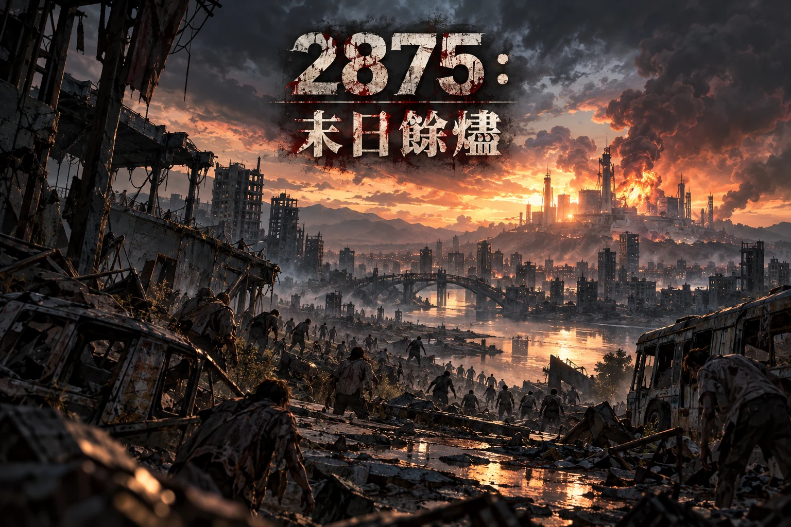

INTERACTIVE STORY

INTERACTIVE APOCALYPSE · 2875
西元 2875 年，X 國西方發生規模 8.7 的強震。當地著名的生物研究院因地震引發化學材料爆炸，樣本隨之洩漏。城市在火光與警報中失去秩序，感染迅速擴散——「末日」不再只是電影與小說裡的詞語。
約 5–8 分鐘 · 三種結局 · 你的選擇會留下痕跡
X 國西方 · 災變年代
2875：末日餘燼GITHUB PAGES × CONOHA STORY API

西元 2875 年，X 國西方發生規模 8.7 的強震。當地著名的生物研究院因地震引發化學材料爆炸，樣本隨之洩漏。城市在火光與警報中失去秩序，感染迅速擴散——「末日」不再只是電影與小說裡的詞語。
約 5–8 分鐘 · 三種結局 · 你的選擇會留下痕跡